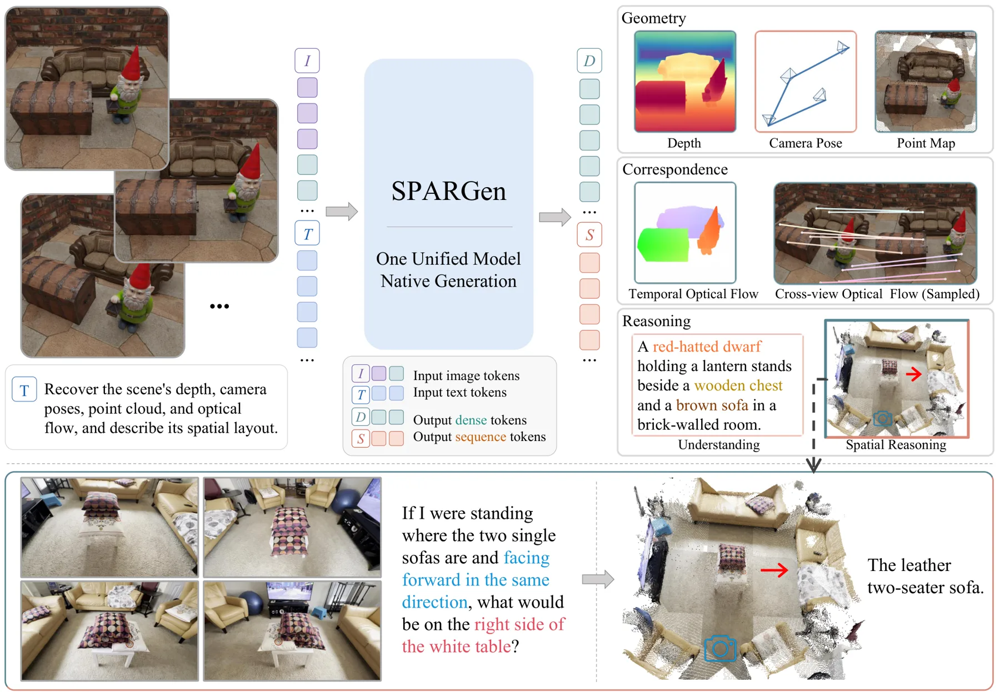
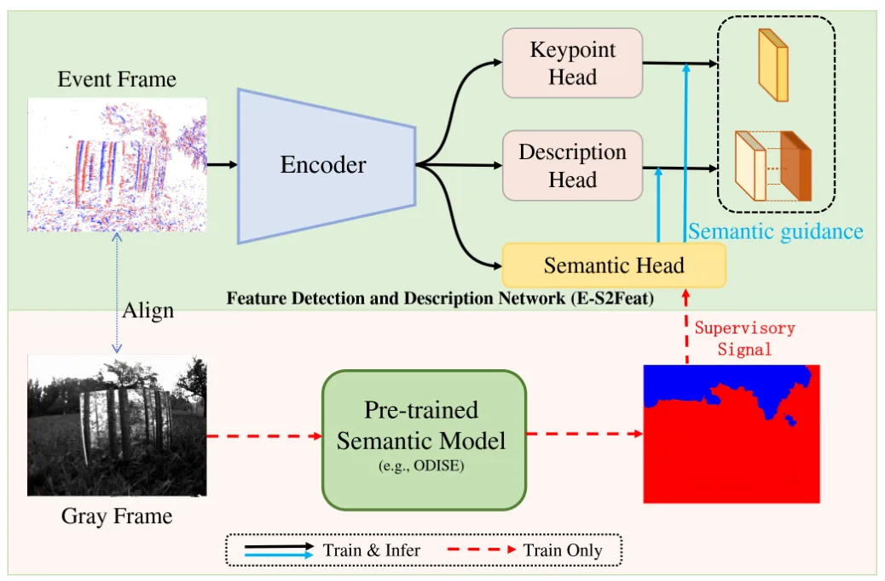

静态网页 · 2026-08-18
SLAM/GNSS/三维重建每日论文阅读
按评分、截图和中文摘要快速筛选当天候选；需要原文时可切换 English。
候选论文：3 推荐论文：3 新论文：3 仓库：28 新仓库：8
今日概览
新增论文 ：3 篇，全部为 is_new=true，均通过医疗领域复核。重复过滤 ：4 篇已见论文已过滤，未进入重点论文、专项或网页推荐卡片。医疗过滤 ：0 篇；3 篇新增论文均不属于医疗、生物医学或临床方向。主题分布 ：城市级八叉树 3DGS 1 篇，统一三维感知与空间推理 1 篇，事件相机低功耗局部特征/VIO 1 篇。新增仓库 ：8 个；优先关注 G--SLAM、ROS 2 Basalt、Jackal-Hesai SLAM/Nav2 和单目深度辅助 VO，其余多为低信息量项目或通用 WebXR 应用。采集完整性 ：COLMAP/SfM/MVS/点云配准/BA 的 arXiv 查询读取超时；GitHub 的 COLMAP、GNSS 查询连接被重置。因此今天不能据此判断这些子方向确无新增，且不另行将 RSS 改为主路径。
论文预览
新论文 · 日期 2026-08-14 · score 11 · cs.CV, cs.AI
作者：Wei Zhang, Shengkai Yu, Shiqiang Gong, Qi Zhang
评分 9.2/10
3D Gaussian Splatting 城市级重建 八叉树 几何一致性 深度法线 新视图合成
一句话工作总结： 让八叉树 3DGS 的粗细层级双向交换结构与纹理信息，再以深度—法线一致性增强城市级重建几何。
面向城市级新视图合成，八叉树锚点 Gaussian Splatting 可用多层锚点从建筑主体到细部自适应表达场景，但现有方法往往逐层独立优化锚点特征，缺乏层间通信，容易造成立面色彩漂移和纹理过度平滑。HiCo-GS 提出两个互补模块：Cross-Level Context Aggregation 利用八叉树空间包含关系构造父层—本层—子层上下文，通过轻量 MLP 与残差连接双向传播结构先验和细节统计；Depth-…
Octree-based anchor Gaussian Splatting has emerged as a scalable representation for city-scale novel view synthesis, where multi-level anchors adaptively capture scene content from coarse building structures t…

新论文 · 日期 2026-08-14 · score 5 · cs.CV, cs.AI
作者：Jinsheng Quan, Jianhua Li, Siyi Xie, Xuanke Shi
评分 7.7/10
多模态生成 三维重建 稠密对应 空间推理 几何场 视觉基础模型
一句话工作总结： 把三维重建、稠密对应和空间关系推理统一成指令驱动的多模态生成任务，以共享空间表征促进能力迁移。
SPARGen 将三维重建、稠密对应和空间推理统一表述为指令条件生成任务。框架把紧凑的结构化输出和语言输出序列化为 token，同时以图像对齐形式生成稠密几何场，使多种空间监督能够共同塑造同一个原生多模态生成模型中的共享表示。作者称该统一框架在三维重建、对应和空间推理等异构 benchmark 上均取得有竞争力的表现，避免为每项能力分别使用任务专用架构或外部几何模块。
Spatial perception and reasoning from visual observations require recovering geometric structure, establishing correspondences, and understanding spatial relations. Existing approaches typically address these…

新论文 · 日期 2026-08-14 · score 5 · cs.CV
作者：Yang Yi, Juntao Hua, Jinpu Zhang, Liangwei Fan
评分 8.4/10
事件相机 视觉惯性里程计 局部特征 脉冲神经网络 语义引导 低功耗感知
一句话工作总结： 用语义先验和模块化脉冲激活改善事件局部特征，在保持位姿估计精度的同时降低理论计算能耗。
E-S2Feat 是面向事件相机局部特征检测与描述的脉冲神经网络框架，旨在同时应对事件稀疏、噪声、纹理不足和资源受限平台的能耗约束。方法使用模块特定的 spiking activation，在低比特推理下保留细粒度结构和判别信息；同时借助语义先验调制关键点响应分布和描述子，提高特征的几何稳定性与区分度。作者报告其在 ECD、EDS 数据集上的位姿估计优于 SuperEvent，精度接近对应 ANN，同时理论计算能效…
Benefiting from high temporal resolution and dynamic range, event-based local feature methods have attracted increasing attention. However, event sparsity, noise, and limited texture still hinder robust local…
精选仓库/项目
默认显示 8 个精选；新仓库、高分仓库和 GNSS/GPS/RTK 相关仓库优先，可展开查看完整候选。
新项目 · ★ 1 · 更新 2026-08-17 · score 15
galahies/G--SLAM Geometrically-Guided 3D Gaussian Splatting SLAM via Robust Loop Validation and Anisotropic Shaping
新项目 · Python · ★ 2 · 更新 2026-08-17 · score 8
新项目 · Python · ★ 0 · 更新 2026-08-17 · score 8
新项目 · Java · ★ 0 · 更新 2026-08-17 · score 7
新项目 · TypeScript · ★ 0 · 更新 2026-08-17 · score 7
caiomauro/ros2-basalt Deterministic Basalt visual-inertial odometry for ROS 2 — stereo/mono cameras, IMU, rosbag2, diagnostics, and Jetson-ready builds.
新项目 · C++ · ★ 0 · 更新 2026-08-17 · score 4
Topics：basalt, cpp, jetson, localization, robotics
新项目 · Python · ★ 0 · 更新 2026-08-17 · score 3
raahimnawaz/monocular-vo Monocular visual odometry with metric scale from Depth Anything v2: calibrated webcam capture, PnP, real-world trajectory.
新项目 · Python · ★ 0 · 更新 2026-08-17 · score 2
Topics：computer-vision, depth-estimation, huggingface, monocular-depth, opencv
还有 20 个候选仓库
Python · ★ 840 · 更新 2026-08-17 · score 14
Topics：autoware-compatible, benchmarking, gnss, lidar, lidar-slam
Python · ★ 0 · 更新 2026-08-15 · score 13
3D-Vision-World/awesome-NeRF-and-3DGS-SLAM A comprehensive list of Implicit Representations, NeRF and 3D Gaussian Splatting papers relating to SLAM/Robotics domain, including papers, videos, codes, and related websites
★ 2098 · 更新 2026-08-13 · score 20
Topics：3dgs, awesome, gaussiansplatting, lidar-slam, nerf
kurajulii/slamAI-istanbulCanyon Enhance drone navigation with robust Visual Odometry and SLAM for urban canyons, focusing on realistic İstanbul environments and machine learning solutions.
Python · ★ 1 · 更新 2026-08-17 · score 11
Topics：airsim, computer-vision, drone, localization, mapping
Cavilach/lidar_odometry Achieve real-time LiDAR odometry with robust state estimation using Probabilistic Kernel Optimization for SLAM applications.
★ 2 · 更新 2026-08-17 · score 7
Topics：colored-point-cloud, ct-icp, gaussian-splatting, gtsam, iros
Python · ★ 0 · 更新 2026-08-17 · score 7
ChicagoShane/slam-final-project Uncertainty-aware Bayesian modeling of second-language acquisition (Duolingo SLAM). ADSP 32014 · Shane Dunkle & Richard Pollitt.
Python · ★ 0 · 更新 2026-08-17 · score 7
Rust · ★ 4943 · 更新 2026-08-17 · score 5
Topics：gaussian-splatting, graphics, reconstruction
darshmenon/rosnav Full-stack ROS 2 autonomous navigation: Nav2, SLAM Toolbox, RTAB-Map 3D SLAM, Gazebo Harmonic, multi-robot fleet coordination, collaborative loop closure, coordinated frontier exploration, MPPI controller, behavior trees & waypoint followi…
Python · ★ 42 · 更新 2026-08-17 · score 5
Topics：autonomous-navigation, behavior-tree, behavior-trees, fleet-management, frontier-exploration
y1s3ra150/lidar_inertial_odometry Accelerate LiDAR-Inertial odometry for accurate motion tracking with advanced estimation and efficient data management using pre-computed surfels.
HTML · ★ 1 · 更新 2026-08-17 · score 9
Topics：3d-mapping, 3d-reconstruction, colored-point-cloud, lidar, lidar-camera-synchronization
koide3/glim GLIM: versatile and extensible point cloud-based 3D localization and mapping framework
C++ · ★ 1745 · 更新 2026-08-17 · score 8
Topics：3d, gpu, imu, lidar, localization
Python · ★ 4 · 更新 2026-08-17 · score 7
Topics：font, funny, metrics, personalized, portfolio
HTML · ★ 0 · 更新 2026-08-17 · score 7
Topics：github-pages, grand-slam, live-scores, single-page-app, sports
Python · ★ 0 · 更新 2026-08-17 · score 7
HTML · ★ 424 · 更新 2026-08-17 · score 6
Topics：deep-learning, gaussian-splatting, lio, slam, vio
C · ★ 0 · 更新 2026-08-17 · score 5
Python · ★ 1 · 更新 2026-08-17 · score 4
Python · ★ 28 · 更新 2026-08-13 · score 4
Topics：3d-reconstruction, factor-graph, gaussian-splatting, gtsam, isam2
HTML · ★ 0 · 更新 2026-08-17 · score 3
Topics：3df, 3df-download, 3df-install, 3df-key, 3df-patch
Python · ★ 0 · 更新 2026-08-17 · score 3
静态站点 · 不依赖 npm/React/CDN · 每日自动生成